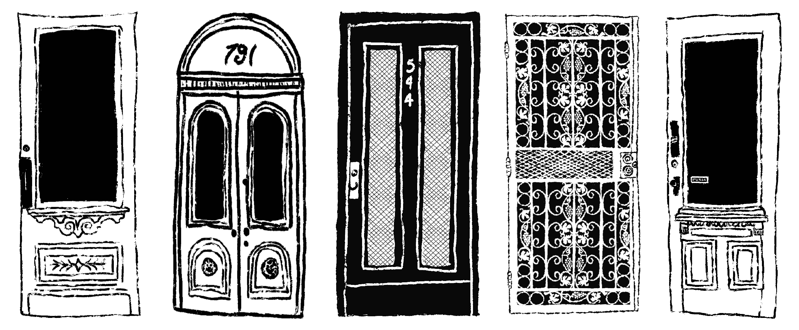

I was on my morning walk in Irving Square Park when I noticed one brownstone had been recently refinished. I couldn’t remember what it looked like before but now it was dark gray, just like the two houses next to it. My heart sank. I don’t know who lives there. I don’t even know if the residents are new to the neighborhood, but it’s part of a gloomy trend that has long had its eyes on Bushwick. On this particular block of Weirfield Street, none of the buildings display their original siding, but each reflects the warm color palette that sets Bushwick apart from ritzy Williamsburg or “DoBro,” as one developer has rebranded downtown Brooklyn. Something similar is happening in San Francisco’s Mission District which has long been defined by Victorians painted in a rainbow of pastels. Of course, the high cost of housing and resulting homelessness is much more important than how buildings are painted, but I can’t seem to stop thinking about the color gray. Some of my primary associations with gray include: army barracks, computers, freeways, cemeteries, and prisons. It’s the color of concrete, the most common building material for new construction. It’s also the color of public works and the cheapest way to build for the masses. However, the gray and black cropping up across the neighborhood is not raw concrete, but new and renovated buildings finished with a fresh coat of paint or vinyl siding. It would cost the same to finish these buildings in an off-white or sunny pastel. In other words, this is not a cost-cutting measure but a choice and, apparently, a fast traveling trend. My guess is that developers are investing in gray with the hopes of luring high-income renters. In the past ten years, certain grays have become synonymous with high-end architecture. The online pages of Dwell magazine are full of homes decorated in a rainbow of graphite, charcoal and slate. But the buildings on Irving Square Park are not high-end, at least not yet. On the subway, I opened Instagram and typed “house flipping.” It’s hard to know who started this trend, but its definitely spreading on Instagram and TikTok. Nearly every “before and after” post follows the same format: a 90’s kitchen with warm wood cabinets and off-white walls replaced with gray cabinets, gray laminate “wood” flooring, black hardware and fluorescent recessed lighting. Interior design media conglomerates are on board as well. Out of ten colors listed in a Better Homes & Gardens article of best exterior paint colors for 2022, seven were variants of black or gray. The YouTuber Mina Le describes this pattern as the “greige agenda” in her video, “why is everything so ugly: the curse of modernism.” What I find most disturbing about this trend is that it feels like no one likes it, but everyone is doing it. A hypothesis I have for this is that the rise of gray was expedited by the lockdowns during the COVID-19 pandemic. Everyone was stuck at home, everyone was renovating their home; everyone was watching home improvement TikTok, and home improvement TikTok was dominated by these cool gray palettes. People were tackling projects they would have hired someone else to do before the pandemic. People without any previous interest in design, color or aesthetics at all were now calling the shots, and they needed to play it safe. Perhaps architects like gray, but architects don’t have to live in the buildings they design. The most imposing examples in Bushwick so far have been the handful of 12-story buildings shooting up from the three-story buildings dominating the pre-war neighborhood, like the monolith of 260 Knickerbocker that towers over Maria Hernandez Park. I assumed that the gray craze began in the world of architecture and design and trickled down and I wanted to get a better sense of the people behind this trend. I asked a clerk at Van Der Most Modern, a furniture store in Bushwick that specializes in mid-century modern, what he thought of the color gray. The storefront went gray in 2019 when Van Der Most opened. Before then, it was the color of a brownstone. The clerk had an interesting response: “I’m pretty familiar with the color at this point, cause I have to paint over graffiti constantly.” He agreed it was a popular color for “new businesses,” which was his way of referencing gentrification. The exterior of the store is spotless, not a single tag. I thought about the graffiti-covered bricks near the McKibbin lofts or down Starr Street: so colorful, always changing and, for better or worse, a tourist attraction. The clerk had mentioned that Garrit Rietveld, an important figure in mid-century modern design, uses gray in his buildings. I looked up Rietveld’s work but found it to be nothing like the “gentrifier gray” that we see in Bushwick. Rietveld used a very light gray as a background for playful accents in primary colors. If the current gray trend is a nod to his work, they’re really missing the point. As I started photographing gray and black buildings in the neighborhood I noticed how the color changed the feeling of the block. On a sunny winter day, I love looking up at the roof line where warm brick meets blue sky, pulling down my shades to look at the sun reflecting off a white three-family on Cornelia street. Until the trees start blooming in April, our buildings are the only colorful thing in the neighborhood. When everything has been painted gray, where will we find inspiration in winter?